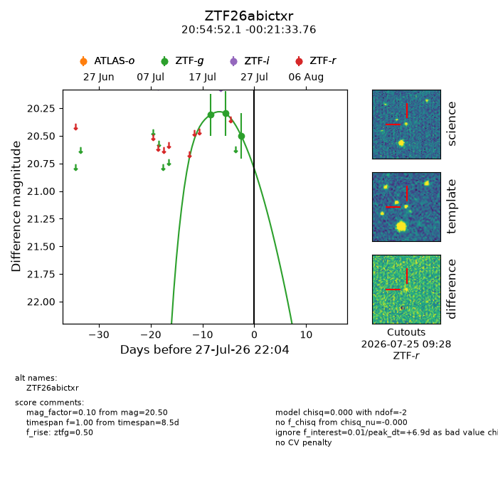
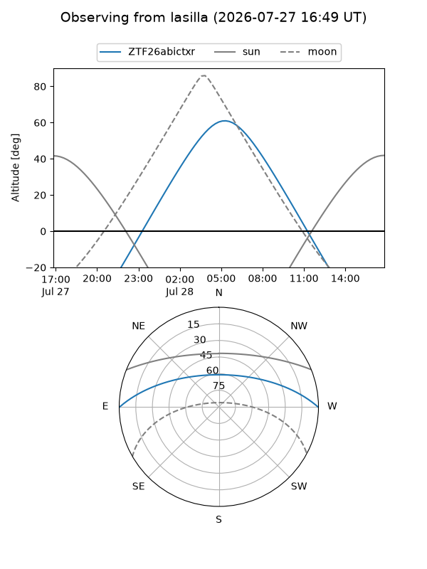
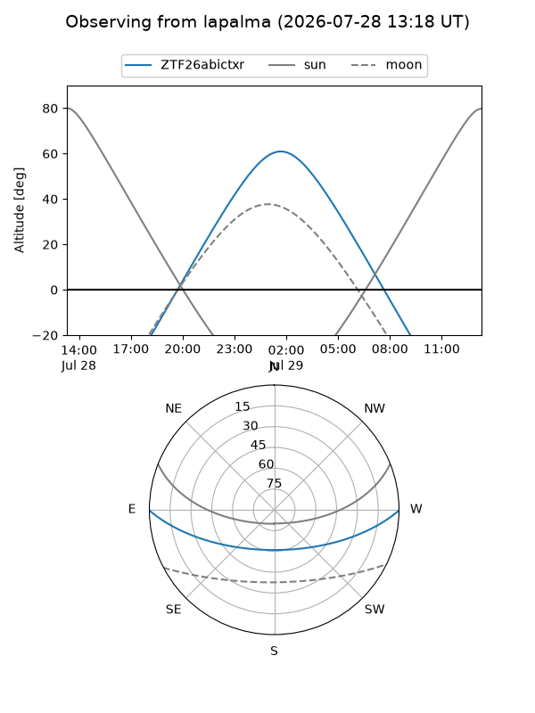
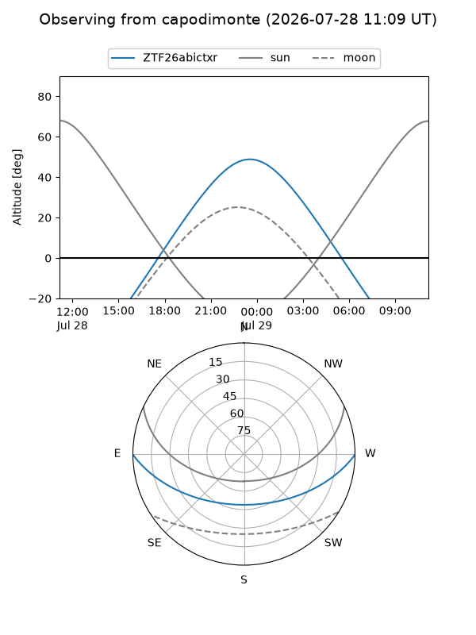
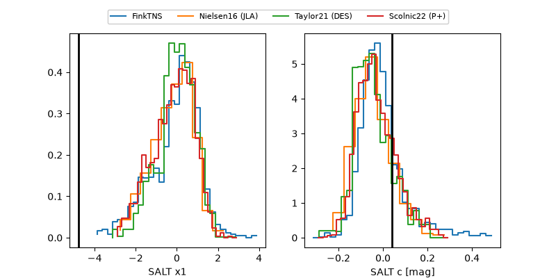

ZTF26abictxr
Target ZTF26abictxr at 2026-07-28 09:51
Aliases and brokers:
FINK-ZTF: ztf.fink-portal.org/ZTF26abictxr
Lasair-ZTF: lasair-ztf.lsst.ac.uk/objects/ZTF26abictxr
ALeRCE-ZTF: alerce.online/object/ZTF26abictxr
Direct TNS query: direct search
alt names
ZTF26abictxr (ztf,fink_ztf)
Coordinates:
equatorial (ra, dec) = 313.7170,-0.35938
equatorial (HMS+DMS) = 20:54:52.08,-00:21:33.76
galactic (l, b) = (47.8244,-27.34391)
Flags:
peak dt: +7.4
Photometry:
last ztfg=20.50
3 ztfg detections
Lightcurve

Visibility



Additional plots
